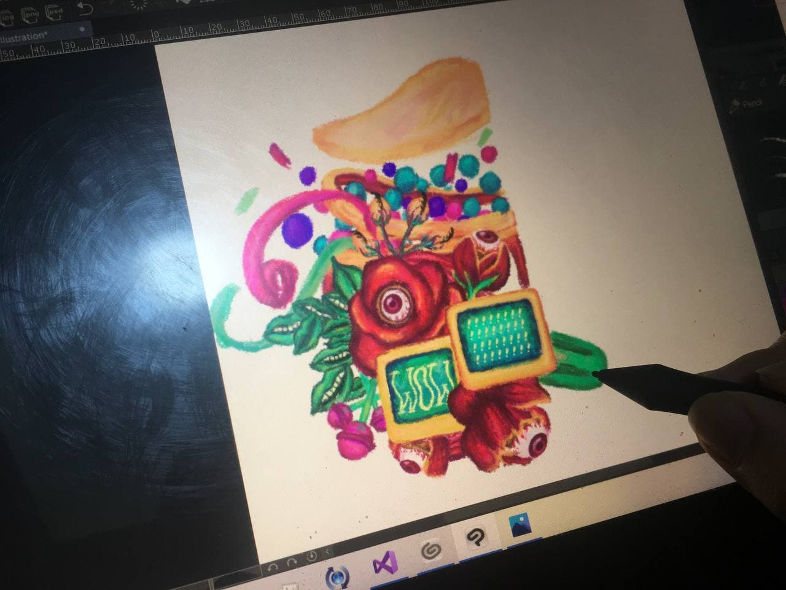

Hi, I'm Angelica Naguio.
But you can call me Angel.
 I really love eating dim sum. Hakao (蝦餃), Xiaolongbao (小笼包), Shumai (燒賣), Beancurd Roll (腐皮捲)... I could eat every kind of dim sum dish in the world.
I really love eating dim sum. Hakao (蝦餃), Xiaolongbao (小笼包), Shumai (燒賣), Beancurd Roll (腐皮捲)... I could eat every kind of dim sum dish in the world.
My favorite programming language?
Kotlin. I'm really interested in making mobile apps and Kotlin is a requisite for Android development nowadays. I chose it as my favorite language because, although I'm still far from fluent in using the language, I want to master it. Kotlin is a great modern language, and it encourages me to relearn Java and practice my Object-Oriented Programming (OOP) fundamentals while learning it.
That's why my favorite CMSC subject is CMSC 22.
CMSC 22 is the class that taught me OOP and Java. The learning curve challenged me so much, and with so little time to keep up I felt like I wasn't able to do my best and maximize my learning experience. I wish I had pushed myself even more and done better in that class. CMSC 22 taught me a lot.
CMSC 22 is the class that taught me OOP and Java. The learning curve challenged me so much, and with so little time to keep up I felt like I wasn't able to do my best and maximize my learning experience. I wish I had pushed myself even more and done better in that class. CMSC 22 taught me a lot.

My Favorite GE Subject?
ARTS 1. It felt like a breath of fresh air from my STEM/CS-based course load
and it allowed me to learn in a non-stressful manner. We made art, shared it with the class,
discussed our views on the art world, and had insightful readings.
The picture on the left is me doing my ARTS 1 assignment.